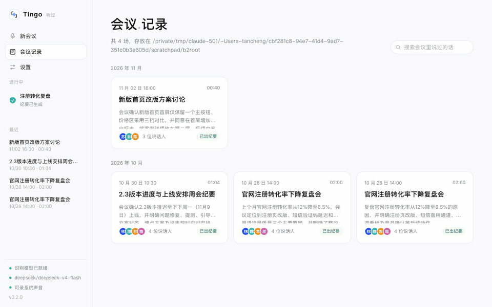
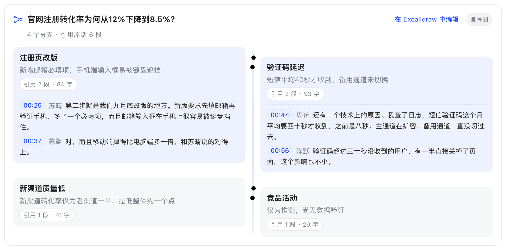
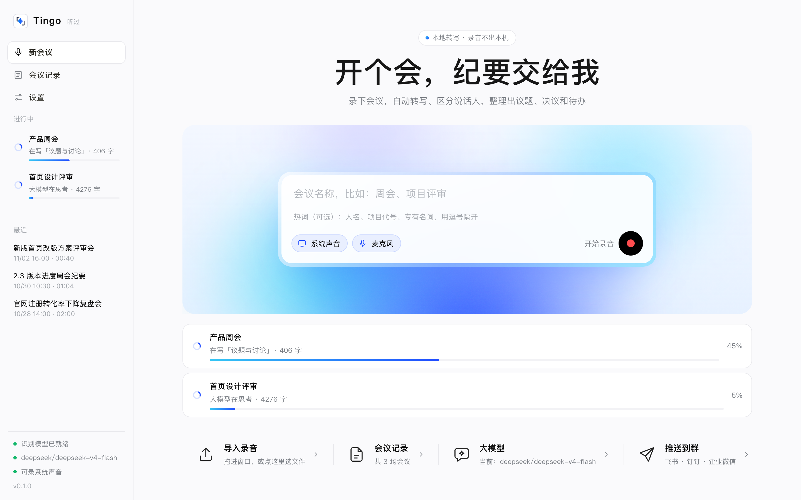
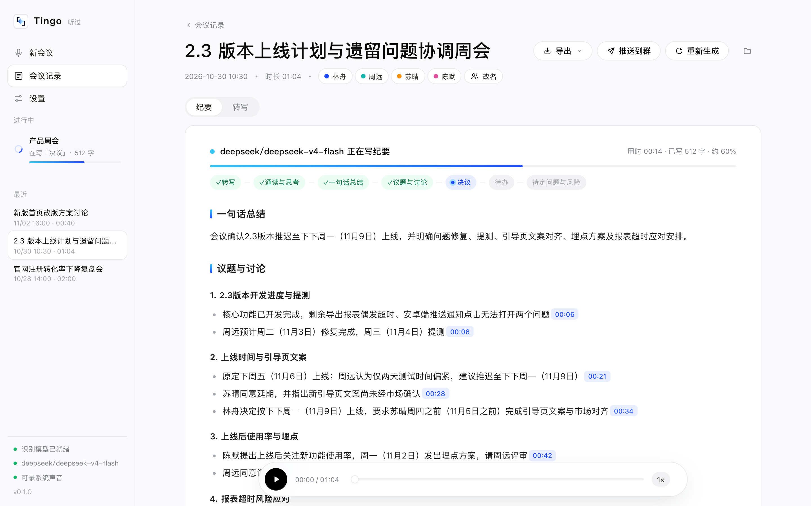
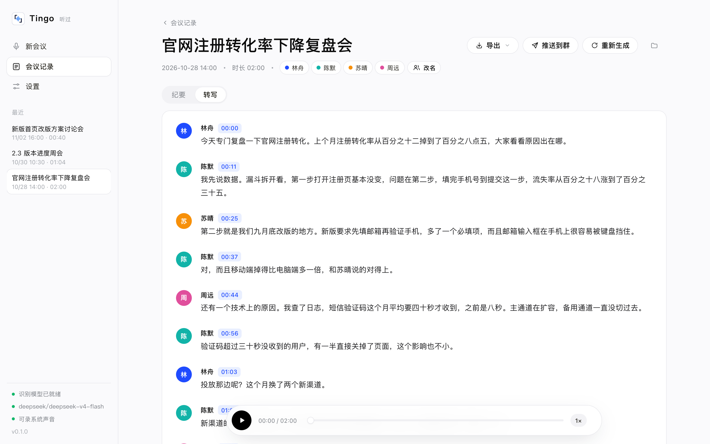
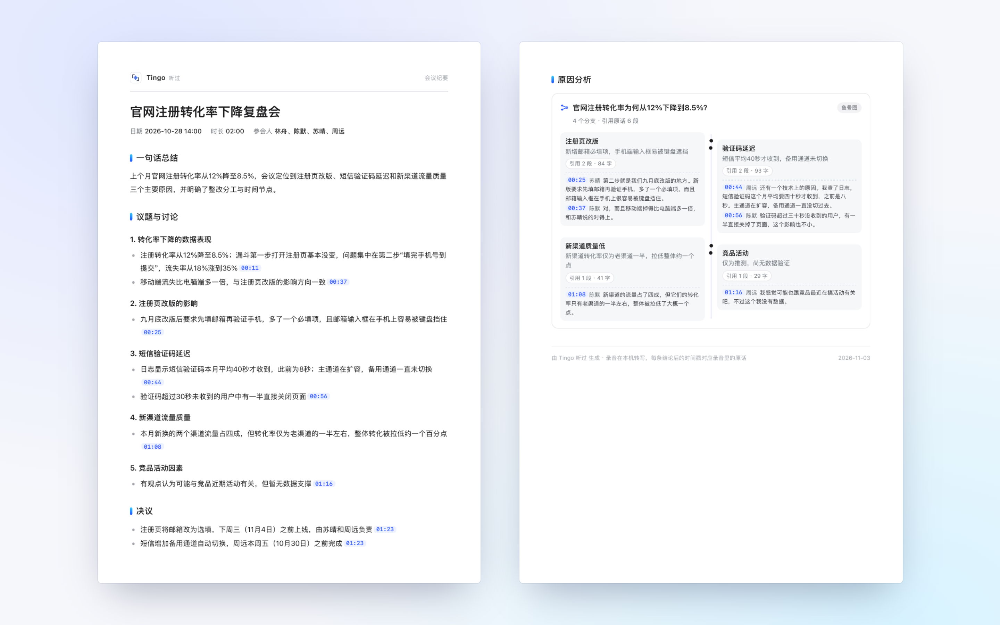

录下会议，在你的 Mac 上转文字、分清谁说了什么，再由你选的大模型整理成纪要——每条结论都带时间戳，点一下就能听到原话。

语音识别、区分说话人都在本地完成，不上传录音；配合本地 Ollama 可以全程断网。
同时录系统声音和麦克风，腾讯会议、飞书、Zoom 里对方的声音都能录到，不用装虚拟声卡。
纪要每条都带时间戳，点一下跳回录音那一秒；"下周三"这类说法换算成具体日期。
讨论原因时自动画鱼骨图，每个分支绑着原话，一句都对不上的标成"无原文依据"。
录完马上能开下一场，转写和纪要在后台进行，能看着大模型一节一节写纪要。
PDF、Obsidian 笔记、Excalidraw 画板、飞书 / 钉钉 / 企业微信群、Markdown。
会上讨论了"为什么"，纪要里就多一张鱼骨图。每个分支都统计引用了多少原文，大模型给的引用在转写里找不到的，直接标红。





| Tingo | 飞书妙记 / 通义听悟等 | Otter / Granola 等 | |
|---|---|---|---|
| 录音存放 | 只在本机 | 云端 | 云端 |
| 中文识别 | FunASR，中文专用 | 好 | 以英文为主 |
| 纪要用的模型 | 自己选，可完全本地 | 平台指定 | 平台指定 |
| 结论追溯原话 | 每条带时间戳，鱼骨图核实引用 | 部分支持 | 部分支持 |
| 费用 | 免费开源 | 按时长或会员收费 | 订阅制 |
打开 Tingo 点录音，会同时录下系统声音和你的麦克风，不用装虚拟声卡。会议软件导出的录音、录屏也可以直接拖进窗口。
不会。识别、区分说话人都在你的 Mac 上完成。生成纪要时只把转写文字发给你选的大模型；用本地 Ollama 的话这一步也不出本机。
任何 OpenAI 兼容接口（DeepSeek、通义千问、OpenAI、Gemini、Kimi、本地 Ollama 等）和 Anthropic（Claude）接口。
能，按声纹自动区分说话人，改名后纪要会按新名字重新生成。
能。界面和纪要都支持英文；中文会议也能直接出英文纪要。
Tingo 本身免费开源（MIT 许可）。用云端大模型生成纪要会产生该服务的调用费用，用本地 Ollama 则完全免费。